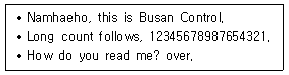
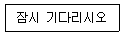
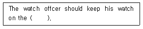
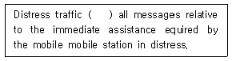
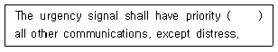
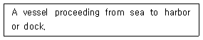
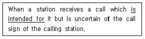
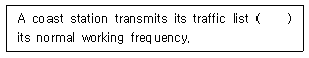
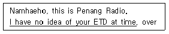
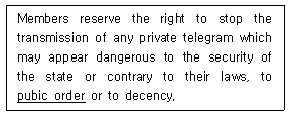

전파전자통신기능사 (2014-10-04 기출문제)
1과목: 임의 구분
1. Inmarsat 시스템에서 고기능 집단호출 장치로서 전해역 또는 특정해역의 항행경보 및 기강경보 등을 수신하는 장치는?
- NAVTEX
- HF 대 NBDP
- DSC
- EGC
(정답률: 74%)

2. 다음 중 종단 전력 증폭기에서 자기 발진이 생기는 것을 방지하기 위하여 취해야 할 조치로 알맞은 것은?
- 변조입력을 적개한다
- 중회회로를 설치한다
- 복동조 회로를 약간 조정한다
- 증폭기의 바이어스 전압을 변경 시킨다
(정답률: 46%)
3. 다음 중 변조기의 일그러짐율(Distortion Factor)을 바르게 나타낸 것은?
- 신호 및 잡음과의 비
- 반송파의 기본파와 고조파의 비
- 변조된 가청주파수 출력의 기본파와 고조파와의 비
- 변조에 사용되는 가정주파 전압과 출력전압과의 비
(정답률: 80%)
4. 반파장 다이폴 안테나의 실효인덕터스(Le)가 25[H], 실효정전용량(Ce)이 4[F]일 때 고유주파수(fo)의 값은? (단, π=3.14)
- 약 0.0016[Hz]
- 약 0.016[Hz]
- 약 0.19[Hz]
- 약 0.019[Hz]
(정답률: 83%)
5. 다음 중 장•중파용 안테나에 속하지 않는 것은?
- λ/4 수직접지 안테나
- 웨이브(Wave)안테나
- 반파장 안테나
- 루프(Loop)안테나
(정답률: 43%)
6. 주파수가 30[MHz]인 반파장 다이폴 안테나의 실효 길이는 약 얼마인가?
- 1.6[m]
- 2[m]
- 3.2[m]
- 5[m]
(정답률: 55%)
7. 다음 중 웨이브 안테나의 특징으로 옳지 않은 것은?
- 광대역성을 갖는다
- 무지향성이다
- 효율이 낮다
- 주로 수신용 안테나로 사용한다
(정답률: 48%)
8. 길이가 λ/4인 도선을 수직으로 늘여 한쪽에는 송신기를 다른 한쪽은 접지하는 방식의 안테나는?
- 수직접지 안테나
- 역 L형 안테나
- 야기 안테나
- 루프안테나
(정답률: 85%)
9. 위성 통신에서 “L"밴드의 주파수 범위는?
- 1∼2[GHz]
- 2∼4[GHz]
- 4∼8[GHz]
- 8∼10[GHz]
(정답률: 46%)
10. AM 송신기에서 1[MHz]의 반송파를 2[kHz]의 가청주파수로 진폭변조 했을 때 점유주파수 대역폭은?
- 2[kHz]
- 4[kHz]
- 988[kHz]
- 1,002[kHz]
(정답률: 71%)
11. 다음 중 위성통신의 특징에 대한 설명으로 적합하지 않은 것은?
- 비화성이 매우 우수하다
- 광대역의 통화회선을 확보할 수 있다
- 초기 투자비용이 다른 통신방식에 비해서 크다
- 넓은 범위의 지역에서 통신이 가능하다
(정답률: 67%)
12. 어떤 신호 파형의 진동수를 측정한 결과 1분 동안에 600회 이었다. 이때 주파수는 몇[Hz]인가?
- 1[Hz]
- 10[Hz]
- 60[Hz]
- 600[Hz]
(정답률: 67%)
13. 전송대역폭이 100이고, 비트율이 16일 때 대역폭 효율은?
- 0.16
- 6.25
- 16
- 100
(정답률: 85%)
14. 최적운용주파수[FOT]가 17[MHz]일 때 최고사용주파수[MUF]는 몇 [MHz]인가?
- 8.5[MHz]
- 10[MHz]
- 17[MHz]
- 20[MHz]
(정답률: 72%)
15. 다음 중 AM 수신기의 감도 측정시 주의해야 할 사항으로 잘못된 것은?
- 표준신호발생기의 출력 임피던스와 의사공중선을 정합하는 경우 삽입 손실을 -3[dB]로 한다.
- 의사 공중선은 수신기의 종류에 따라 적당한 것을 선정해야 한다.
- 각 부의 접지는 완전하게 한다.
- 외부 잡음의 영향을 받지 않도록 한다.
(정답률: 72%)
16. 중파 주파수대의 파장으로 맞는 것은?
- 100[km] ∼ 50[km]
- 10[km] ∼ 1[km]
- 1[km] ∼ 100[m]
- 10[m] ∼ 1[m]
(정답률: 72%)
17. 다음 정류방식 중 맥동율이 가장 적은 방식은?
- 3상 전파방식
- 3상 반파방식
- 단상 전파방식
- 단상 반파방식
(정답률: 42%)
18. 다음 중 무선 송신기의 발진부 역할을 바르게 나타낸 것은?
- 반송파를 만든다.
- 변조파를 발진시킨다.
- 피변조파를 만든다.
- 신호파를 발진시킨다.
(정답률: 55%)
19. 다음 중 AM 수신기에서 전체 이득과 선택도를 결정하는 가장 중요한 부분은?
- 고주파 증폭부
- 주파수 변환부
- 중간주파 증폭부
- 복조회로
(정답률: 56%)
20. 급전선의 특성 임피던스가 50[Ω]이고, 안테나 임피던스가 75[Ω]인 경우 급전선에 안테나를 연결하였을 때 반사계수는 얼마인가?
- 0.1
- 0.2
- 0.3
- 0.4
(정답률: 75%)
2과목: 임의 구분
21. “호출부호”를 바르게 영역한 것은?
- station sign
- calling name
- call sign
- station name
(정답률: 90%)
22. 무선전화에서 “나의 송화는 끝나고 너의 응답을 기다린다.” 의 옳은 용어는?
- ROGER
- STOP
- OVER
- HEAD
(정답률: 87%)
23. 다음 중 ITU의 공용어가 아닌것은?
- Russian
- Japanese
- Spanish
- Arabic
(정답률: 85%)
24. 다음 문장이 의미 하는 것으로 알맞은 것은?

- Namhaeho에게 숫자를 송신하는 내용
- Namhaeho와 송,수신기를 조정시키기 위해 보내는 글
- Namhaeho를 통제하기 위해 정기적으로 행하는 호출
- Busan 항만국에서 Namhaeho를 긴급 호출하는 내용
(정답률: 70%)
25. 무선전화 통화에서 다음 문장을 적합하게 영역한 것은?

- Stand by
- Verify
- Go ahead
- Roger
(정답률: 92%)
26. 다음 문장의 괄호 안에 들어갈 가장 적합한 단어는?

- bridge
- deck
- engine room
- hatch
(정답률: 79%)
27. 문맥상 괄호 안에 알맞은 단어는?

- comprises
- except
- removal
- disregard
(정답률: 66%)
28. Whoever wants to become a radio operator has to ( ) the state examination for radio operators first.
- listening
- pass
- sending
- used
(정답률: 49%)
29. 다음 문장의 괄호 안에 들어갈 가장 적당한 것은?

- below
- out
- over
- under
(정답률: 76%)
30. 다음 중 ITU의 목적에 해당하지 않는 것은?
- To maintain the international cooperation
- To promoto the development of technical facilities
- To harmonize the actions of members
- To reserve the human rights
(정답률: 80%)
31. Santa Paula 해안지구구은 어느 나라에 소속하는 지구국 인가?
- United Kingdom
- Russia
- Italy
- United States America
(정답률: 86%)
32. 다음에 설명하는 것은 어떤 선박인가?

- 도선선
- 입항선
- 출항선
- 예인선
(정답률: 86%)
33. 다음 문장의 밑줄친 부분의 뜻으로 옳은 것은?

- ∼을 확인하다
- ∼할 작정이다
- 시키려고 한다
- ∼을 뜻한다
(정답률: 86%)
34. 다음 문장의 괄호 안에 가장 적합한 것은?

- by
- in
- on
- with
(정답률: 59%)
35. 다음 문장의 밑줄 친 부분의 뜻과 같은 문장은?

- I don’t have to know your ETD at this time.
- I don’t know your ETD at this time.
- I didn’t know of yor ETD at this time.
- I have a idea of your ETD at this time.
(정답률: 68%)
36. 다음 영문의 밑줄친 부분의 가장 적합한 뜻은?

- 공공복리
- 공중심리
- 시민권리
- 공공질서
(정답률: 83%)
37. 다음 중 펙시밀리 방송을 하는 일본기상방송국의 호출부호는?
- JMC
- JMH
- JMG
- JJY
(정답률: 54%)
38. Which is the basic intrument of the lnternational telecommunication Union?
- The constitution
- The convention
- The Regulation
- The provision
(정답률: 53%)
39. 영어문자 “P"를 음성통화표에 따라 송싱할 때 사용하는 CODE는?
- Page
- Pour
- Papa
- Put
(정답률: 80%)
40. 다음 중 해상 또는 선박에서 거리를 나타내는데 주로 사용하는 단위는?
- mile
- km
- natutical mile
- marine mile
(정답률: 64%)
3과목: 임의 구분
41. 등록대상 주파수를 사용하는 무선국을 개설하고자 하는 자는 어느 기관에 해당 주파수에 대한 국제등록신청을 요청하여야 하는가?
- 미래창조과학부
- 한국방송통신전파진흥원
- 전파진흥협회
- 우체국
(정답률: 58%)
42. 실용화시험국의 무선국 개설허가의 유효기간은?
- 1년
- 2년
- 3년
- 5년
(정답률: 45%)
43. 다음 중 해상이동업무에서의 통신 우선순위가 가장 낮은 것은?
- 공중통신
- 긴급통신
- 안전통신
- 조난통신
(정답률: 85%)
44. 국제전기통신연합(ITU) 전권회의가 휴회 중에 이를 대신하여 연합을 관리하는 기관은?
- 사무총국
- 국제전기통신 세계회의
- 이사회
- 전파규칙위원회
(정답률: 79%)
45. 육상 VHF해안국의 통신범위(20∼30해리)에 속하는 해역은?
- A1 해역
- A2 해역
- A3 해역
- A4 해역
(정답률: 80%)
46. 다음 중 주파수분배 시 고려해야 할 사항으로 거리가 먼 것은?
- 국가안보상의 필요성
- 국위의 선양을 위한 필요성
- 인명안전상의 필요성
- 질서유지상의 필요성
(정답률: 88%)
47. 다음 중 스퓨리어스발사에 포함되지 않은 것은?
- 고주파 변환에 의한 발사
- 기생발사
- 고조파 발사
- 상호복조에 의한 발사
(정답률: 79%)
48. 약호자재의 승인은 누가 하는가?
- 미래창조과학부장관
- 중앙전파관리소장
- 국가정보원장
- 시장
(정답률: 38%)
49. 국제전기통신규칙(ITR)을 부분적으로 개정할 수 있는 곳은?
- 전파관리위원회
- 세계전파통신회의
- 국제전기통신세계회의
- 세계전기통신표준화회의
(정답률: 61%)
50. 이동국에 대하여 전파를 발사하여 그 전파발사 위치에서의 방향 또는 방위를 그 이동국으로 하여금 결정하게 할 수 있도록 하기 위한 무선항해업무를 무엇이라고 하는가?
- 무선표지업무
- 무선탐지업무
- 무선방향탐지업무
- 무선측위업무
(정답률: 61%)
51. 다음 중 비밀이나 중요내용이 통신에 의해 노출되는 주요원인이 아닌 것은?
- 통신제원의 노출
- 보고체계의 일원화
- 과도한 통신량으로 검토 소흘
- 취약성 있는 통신망 이용
(정답률: 81%)
52. 다음 중 심사에 의해 주파수를 할당하고자 하는 경우 심사하는 사항이 아닌 것은?
- 전파자원 이용의 효율성
- 신청자의 재정적 능력
- 신청자의 기술적 능력
- 신청자의 전파발전을 위한 경력
(정답률: 71%)
53. 다음 중 무선통신의 원칙으로 적합하지 않은 것은?
- 무선통신의 내용은 필요 최소한의 사항으로 이루어져야 한다.
- 무선통신에 사용하는 용어는 가능한 간명해야 한다.
- 무선통신을 하는 때에는 정확하게 송신하여야 하며, 오류를 인지한 경우에는 즉시 정정한다.
- 무선통신을 하는 때에는 보안을 위해 자국의 표지 부호를 붙이지 않는다.
(정답률: 73%)
54. 다음 중 전파법의 목적으로 볼 수 없는 것은?
- 전파의 효율적인 이용
- 전파에 관한 기술개발의 촉진
- 전파 관련 분야의 진흥
- 개인의 복리증진
(정답률: 86%)
55. 다음 중 무선국 개설의 결격 사유에 해당되지 않는 사람은?
- 외국정부 또는 그 대표자
- 외국의 법인 또는 단체
- 대한민국 국적을 가진자
- 전파법을 위반하여 금고 이상의 실형을 선고 받고 그 집행이 끝나고 2년이 지나지 아니한 자
(정답률: 68%)
56. ITU 조직구조에서 구 ITU-R 총회를 개편하여 전파통신분야의 내부절차 규칙에 따라 채택한 문제, 전권위원회의, 전파관리위원회의 등에서 위임한 문제에 대한 권고를 처리하기 위한 기구는?
- RA(Radiocommunication Assembly)
- GS(General Secretariat)
- PC(Plenipotentiary Conference)
- WRC(World Radiocommunication Conferency)
(정답률: 35%)
57. 다음 중 미래창조과학부장관이 전파자원을 확보하기 위하여 마련해야 할 시책으로 옳지 않은 것은?
- 새로운 주파수의 이용기술 개발
- 이용 중인 주파수의 이용효율 향상
- 주파수 국내등록
- 국가간 전파의 혼신을 없애고 방지하기 위한 협의
(정답률: 64%)
58. 세계해상조난 및 안전제도에 따라 DSC장치를 갖춘 선박에서 조난경보를 송신할 때 사용전파를 바르게 나타낸 것은?
- 전파형식이 G1B 또는 G2B이고, 주파수가 1,645.5[MHz]인 전파
- 전파형식이 G1B 또는 G2B이고, 주파수가 1,646.5[MHz]인 전파
- 전파형식이 F1B 또는 J2B이고, 주파수가 2,187.5[MHz], 4,207.5[MHz], 6,312[kHz], 8,414.5[kHz], 12,577[kHz], 16,804.5[kHz]인 전파
- 전파형식이 F1B 또는 J2B이고, 주파수가 2,174.5[MHz], 4,177.5[MHz], 6,268[kHz], 8,376.5[kHz], 12,520[kHz], 16,965.5[kHz]인 전파
(정답률: 85%)
59. 다음 중 전령통신(인편)의 취약성이 아닌 것은?
- 피습당할 우려
- 신속성 결여
- 계절 또는 기후의 영향 받음
- 시계의 제한 받음
(정답률: 73%)
60. 다음 통신시설의 보호구역 중 통제구역에 대한 정의로서 가장 적절한 것은?
- 비인가자의 출입이 금지되는 보안상 극히 중요한 구역
- 비인가자의 접근을 방지하기 위해 출입 안내가 요구되는 구역
- 통신시설 등을 보호하기 위해 경비원에 의해 일반인의 감시가 요구되는 구역
- 주요통신시설에 대하여 모든 출입구역이 금지되는 구역
(정답률: 67%)